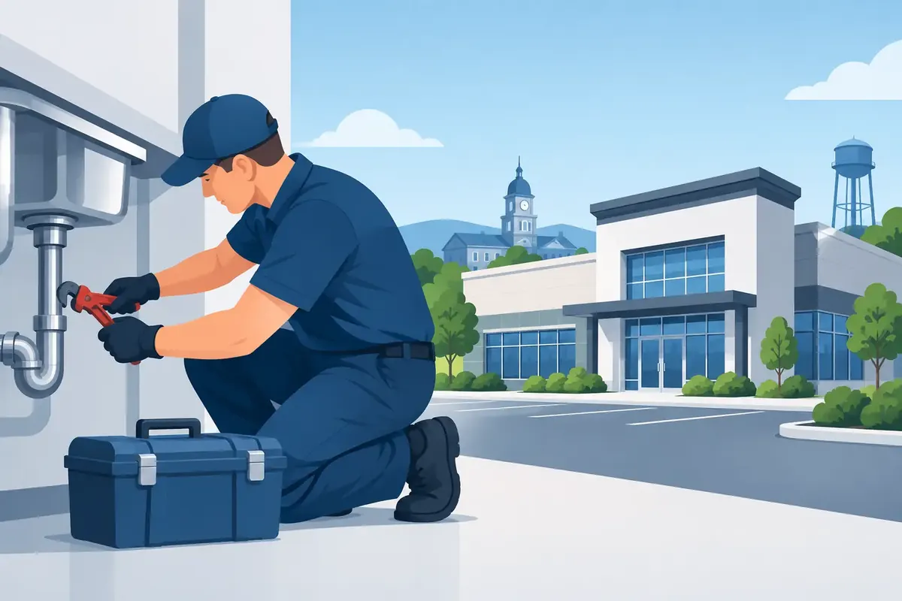

A restaurant can lose a full shift to a backed-up kitchen drain. A medical office can face an uncomfortable shutdown when a restroom fixture will not stop running. An apartment manager may get a late-night call about water coming through a ceiling. Commercial plumbing Murfreesboro property owners need is not just about fixing a pipe - it is about protecting people, operations, and the reputation built inside the building.
For businesses across Middle Tennessee, plumbing problems have a way of arriving at the least convenient moment. The right response starts with a qualified local team that understands urgency, explains the options clearly, and treats your property with the same respect they would give their own.
What Makes Commercial Plumbing Different?
Commercial systems work harder than most residential plumbing. More people use the restrooms, water heaters serve larger demands, and drain lines often handle grease, paper products, cleaning chemicals, or constant daily traffic. A small issue can become a major disruption quickly when it affects employees, tenants, customers, or required health and safety standards.
The goal is not always the fastest possible repair. Sometimes it is. A burst line, active sewage backup, or loss of hot water in a care setting needs prompt action. But for a recurring drain issue or aging water heater, a thoughtful diagnosis can prevent the business from paying for the same service call again next month.
A commercial plumber should look at the immediate failure and the condition that caused it. That may mean locating a hidden leak, inspecting a sewer line, testing water pressure, checking a failed valve, or identifying whether scale buildup is shortening water-heater life. The right solution depends on the building, the equipment, the occupancy, and how much downtime the business can reasonably absorb.
Commercial Plumbing Services Murfreesboro Properties Need
A dependable commercial plumbing partner should be prepared to handle both planned work and unexpected failures. Common needs include leak detection and pipe repair, drain clearing and sewer service, toilet and faucet repairs, water-heater installation and maintenance, backflow testing and repair, and fixture replacements for restrooms, break rooms, kitchens, and tenant spaces.
Water service deserves particular attention. A failing water heater can interrupt a restaurant, salon, gym, school, office building, or multifamily property. Depending on the demand, a conventional tank unit may be the sensible choice, while a tankless or heat-pump water heater may offer better long-term operating benefits. There is no one-size-fits-all answer. Equipment selection should consider peak usage, available space, fuel type, electrical capacity, recovery needs, and budget.
Water quality can also affect commercial equipment and operating costs. Hard water leaves mineral scale inside pipes, fixtures, dish equipment, boilers, and water heaters. Filtration, softening, descaling, reverse osmosis, or UV treatment may be appropriate depending on the property and the water concern. A good recommendation begins with the actual problem, not a generic sales pitch.
Backflow Compliance Protects More Than Paperwork
Backflow devices help prevent contaminated water from moving backward into a clean water supply. Many commercial properties need these devices tested on a required schedule, especially properties with irrigation systems, food service operations, medical uses, fire protection systems, or specialized equipment.
Missing a required test can create avoidable compliance problems. More importantly, a malfunctioning backflow assembly can create a real health concern. Routine testing gives property operators documentation and an opportunity to address wear before a device fails at the wrong time.
Drains Need a Plan, Not Just a Quick Fix
A slow drain is easy to ignore until it turns into a closure, odor complaint, or wastewater backup. Commercial drain problems may come from grease accumulation, root intrusion, damaged pipe, poor slope, heavy paper use, or objects that never belonged in the line.
Clearing a blockage restores flow, but it may not answer why the blockage formed. Video inspection can be especially useful when the issue repeats. It helps identify whether the line needs cleaning, repair, replacement, or a maintenance schedule tailored to the property’s actual use.
When to Call Before a Small Problem Spreads
Facility managers and business owners often save money by acting at the first sign of trouble rather than waiting for total failure. Pay attention to these warning signs:
- Water bills that rise without a clear increase in usage
- Restrooms with recurring clogs, weak flushing, or foul odors
- Stains on ceilings, walls, or flooring near plumbing lines
- Water heaters that run out of hot water, make unusual noises, or leak
- Drains that repeatedly slow down after being cleared
- Changes in water pressure, water color, or the taste and odor of drinking water
Not every symptom calls for a major repair. A worn flapper, failed fill valve, or loose connection may be straightforward to correct. Still, an experienced plumber can tell the difference between a simple component repair and an early warning of a larger system problem.
Maintenance Helps You Control Downtime
Emergency plumbing service is essential, but planned maintenance is where many commercial operators gain the most control. A maintenance visit can catch small leaks, test shutoff valves, inspect water heaters, review drain performance, examine exposed piping, and verify that backflow devices and fixtures are working as intended.
The best maintenance interval depends on the building. A busy restaurant may need regular drain attention because of grease and food debris. A retail office with a few restrooms may require a different schedule. Multifamily properties benefit from watching for unit-to-unit leak patterns, aging supply lines, and water-heater conditions before a tenant’s complaint becomes a renovation project.
It is also wise to know where the main water shutoff is located and who has authority to use it. Smart water shutoff valves can provide another layer of protection by monitoring for unusual water activity and shutting off the supply when a serious leak is detected. They are not a replacement for inspections or good maintenance, but they can reduce water damage when a leak occurs after hours.
Choosing a Commercial Plumbing Partner
Price matters, especially when a business is managing multiple properties or unplanned expenses. Yet the lowest initial quote is not always the least expensive choice. A repair that does not address the cause, unclear scope of work, poor communication, or a missed appointment can cost more in lost productivity and repeat calls.
Look for a contractor that communicates upfront pricing, provides clear repair options, carries the appropriate credentials, and stands behind workmanship. It also helps to work with a team that answers the phone when an urgent problem cannot wait until morning. For businesses with customers and employees on site, courtesy matters too. Technicians should arrive prepared, communicate professionally, protect the work area, and keep language family-friendly.
Angle Stop Plumbing brings 31 years of experience to commercial properties in Murfreesboro and Middle Tennessee, with live-phone support and 24/7 emergency availability when a plumbing issue cannot wait. As a veteran-owned, locally owned company, the team approaches each call with disciplined service, straightforward communication, and a commitment to treat customers like family.
Prepare Now for the Call You Hope Not to Make
Keep a simple record of plumbing repairs, water-heater age, backflow test dates, and recurring drain locations. Share it with the person responsible for maintenance and keep emergency contact information where staff can find it. That small amount of preparation helps a plumber diagnose problems faster and helps your team respond calmly if water appears where it should not.
If your property is dealing with a leak, backup, hot-water interruption, or a plumbing issue that keeps coming back, do not wait for a slower day. A timely inspection can protect your building, your people, and the business you work hard to serve.